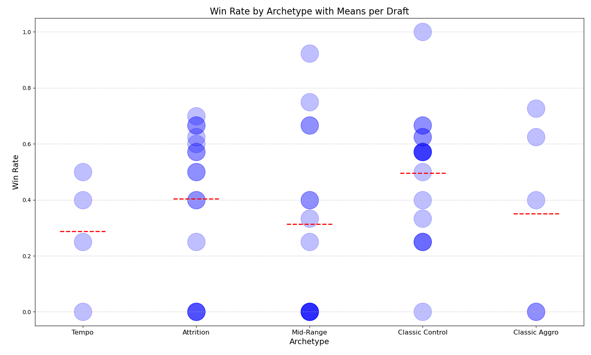

Finding 2
Testing the classes was too obvious. In Hearthstone, some archetypes (strategies) dominate others, much like in rock-paper-scissors. However, according to HearthArena.com, one archetype dominates the others. Additionally, I believe I perform better with certain archetypes. In order to test my belief, I formulated the following null hypothesis:
Null Hypothesis: There is no significant difference in the mean win rates among the archetypes.
Alternative Hypothesis: There is a significant difference in the mean win rates among the archetypes.
I decided to run an ANOVA test since I am examining whether there is a significant difference between the dependent groups in terms of their mean win rates.
Validating ANOVA
Independence
The measurements should be independent, i.e., the measured value of one group should not be influenced by the measured value of another group.
I assume independence relying on the assumption of this is a competitive game 🥴. I love being an undergrad.
Homogeneity
The variances in each group should be approximately equal.
Homogeneity
I conducted Levene test.
- Null Hypothesis: Groups have equal variances.
- Alternative Hypothesis: Groups have different variances.
According to the Levene test, I found that the assumption of homogeneity of variances was upheld (p = 0.362).
Normal distribution
The data within the groups should be normally distributed.
In the Q-Q plot of Attrition (Shapiro-Wilk p = 0.007) and Mid-Range (Shapiro-Wilk p = 0.022), one data point violates the 95% confidence interval. The Shapiro-Wilk test indicates that I can assume normality for Mid-Range but not for Attrition. Therefore, I do NOT assume normality.
Kruskal Wallis
Since normality violated and ANOVA is no longer valid, I conduct Kruskal Wallis.
HERE HERE HERE HERE
In conclusion, there are no significant differences in win rates among the archetypes.